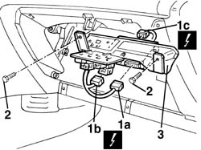
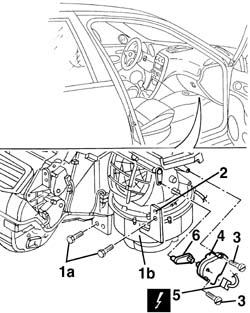
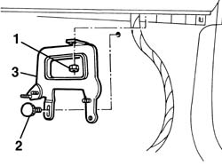
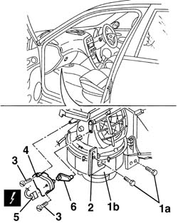

5020B60 outside air/recirculation flap control actuator - r+r following wiring check
- Path
- Procedures > 50 AUXILIARY UNITS > 5020 HEATER > 5020B heater controls > 5020B60 outside air/recirculation flap control actuator - r+r following wiring check
- Kind
- repair procedure (removal / refitting; the operation number is the code)
- Applies to
- all engines; all production periods
- Interactive page
- https://sloeber94.github.io/elrnDB-a156/en/#/3238292
Applies to: all engines; all production periods
 Removing
Removing
 Refitting
Refitting7040G24 switch for facia compartment light - r+r
7040G20 facia compartment light bulb holder - r+r
7040A14 flap of glove compartment trim element (one) - arrange
Applies to: engines: 1.6 TS , 2.5 V6, 1.9 JTD 8v , 2.4 JTD 10v; all production periods
Applies to: engines: 1.6 TS , 1.8 TS, 2.5 V6, 1.9 JTD 8v , 2.4 JTD 10v; all production periods
1. Disconnect integrated services control unit electrical connections (1a), (1b), (1c).
 | Name | Connector |
|---|---|---|
1a | Integrated services control unit |
| Name | Connector |
|---|---|---|
1b | Integrated services control unit |
| Name | Connector |
|---|---|---|
1c | Integrated services control unit |
2. Unscrew the control unit and relay bracket bolts.
3. Move the control unit and relay bracket.

Applies to: engines: 1.6 TS , 1.8 TS, 2.5 V6, 1.9 JTD 8v , 2.4 JTD 10v; all production periods
1. Unscrew bolts (1a) indicated, which secure heater (1b).
2. Slightly lower the heater unitl the bolt fits into the hole.
3. Undo the bolts.
If necessary, cut away the underfacia wall sound-proofing to gain acces to the front bolt.
4. Move the actuator.
5. Disconnect the electrical connection.
| Name | Connector |
|---|---|---|
5 | Air intake actuator |
6. Recover the flap control lever.

Applies to: all engines; all production periods
Refitting
RemovingCheck that the actuator is not damaged and, if necessary, conduct an electrical test on it.
Reposition the flap control lever.
Connect the electrical connection.
Refit the actuator.
Restore the unit to the correct position and secure with the bolts.
Refit the control unit and relay bracket.
Connect the electrical connections to the integrated services control unit.
Applies to: engines: 1.6 TS , 2.5 V6, 1.9 JTD 8v , 2.4 JTD 10v; all production periods
Applies to: engines: 1.6 TS , 1.8 TS, 2.5 V6, 1.9 JTD 8v , 2.4 JTD 10v; all production periods
5580C22 AIR BAG MODULE - Passenger side - R.R.
7040A09 passenger air bag compartment cover - r r
7040A14 flap of glove compartment trim element (one) - arrange
7040G20 facia compartment light bulb holder - r+r
7040G24 switch for facia compartment light - r+r
Check that the actuator is working properly.
Applies to: all engines; all production periods; only with equipment: Right hand drive and Heater
Removing
Refitting7040G24 switch for facia compartment light - r+r
7040G20 facia compartment light bulb holder - r+r
7040A14 flap of glove compartment trim element (one) - arrange
Applies to: engines: 2.5 V6; all production periods; only with equipment: Right hand drive and Heater
1056B82 injection/ignition system e.c.u. (one) - r + r
1. Undo the nut.
2. Undo the screw cap.
3. Remove the bracket.

Applies to: engines: 1.8 TS, 2.5 V6; all production periods; only with equipment: Right hand drive and Heater
1. Unscrew bolts (1a) indicated, which secure heater (1b).
2. Slightly lower the heater unitl the bolt fits into the hole.
3. Undo the bolts.
4. Move the actuator.
5. Disconnect the electrical connection.
| Name | Connector |
|---|---|---|
5 | Air intake actuator |
6. Recover the flap control lever.

Applies to: all engines; all production periods; only with equipment: Right hand drive and Heater
Refitting
RemovingCheck that the actuator is not damaged and, if necessary, conduct an electrical test on it.
Reposition the flap control lever.
Connect the electrical connection.
Refit the actuator.
Restore the unit to the correct position and secure with the bolts.
Applies to: engines: 2.5 V6; all production periods; only with equipment: Right hand drive and Heater
1056B82 injection/ignition system e.c.u. (one) - r + r
Fit the control unit bracket and fix it using the threaded plug and the nut.
Applies to: engines: 1.8 TS, 2.5 V6; all production periods; only with equipment: Right hand drive and Heater
5580C22 AIR BAG MODULE - Passenger side - R.R.
7040A09 passenger air bag compartment cover - r r
7040A14 flap of glove compartment trim element (one) - arrange
7040G20 facia compartment light bulb holder - r+r
7040G24 switch for facia compartment light - r+r
Check that the actuator is working properly.
Topics linked from this page (11)
- 1056B82 injection/ignition system e.c.u. (one) - r + r
- 5580C22 AIR BAG MODULE - Passenger side - R.R.
- 7040A09 passenger air bag compartment cover - r r
- 7040A14 flap of glove compartment trim element (one) - arrange
- 7040A31 flap assembly - r r
- 7040G20 facia compartment light bulb holder - r+r
- 7040G24 switch for facia compartment light - r+r
- M40A Integrated services control unit ( REAR )
- M40B Integrated services control unit ( REAR )
- M40C Integrated services control unit ( FACIA )
- N82 Air intake actuator